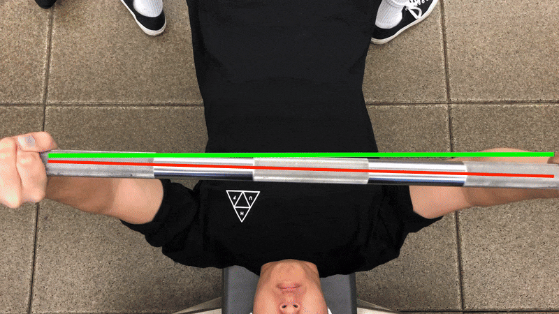
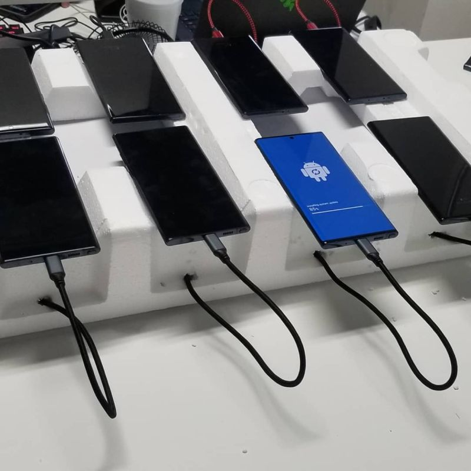

👐 Hand Warm-ups (2025)
Using computer vision to track finger-to-thumb warm-up gestures.
These are a few projects I've built over the years — just some public examples. There's more...
💼 LinkedIn | 💻 GitHub | 📧 Email
Using computer vision to track finger-to-thumb warm-up gestures.
Tracks arm motion and gives feedback on running form.
Using smart phone to calculate rotation and tilt of bench or squat
A react native dating app where users could search for things they are interested in, like hiking or cooking. Focused on intentional connection and aesthetics over gamification.
Android Gameboy emulator UI with Tetris built using Jetpack Compose.

Short video demos of an interactive pathfinding project.
Ported A* visualizer code to Android

Android concept interface and interactions using Kotlin/Compose.

Fetches local data from GPS and APIs for contextual info.

Augmented Reality performance for a live show, sitting in control booth with custom controller.
Work smarter not harder. This setup turned a 4 hour process into 5 minutes.
Android/iOS native app focused on intentional connection and aesthetics over gamification. Utilizing AI for facial recognition and detection.
Scripting and automation to simulate remote control inputs. Testing how many headless clients can be supported.
Early-stage web app for MMJ pricing aggregation. Made from scraping data off Weedmaps.
You've reached the lab. Welcome!